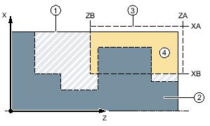
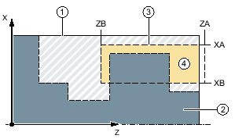

Funktion
Wenn Sie einen beliebig geformten Einstich fertigen möchten, nutzen Sie die Funktion "Stechen".
Bevor Sie den Einstich programmieren, müssen Sie erst die Kontur des Einstichs eingeben.
Ist ein Einstich breiter als das aktive Werkzeug, wird die Breite in mehreren Schnitten abgespant. Dabei wird das Werkzeug bei jedem Einstich um (maximal) 80% der Werkzeugbreite verschoben.
Rohteil
Beim Stechen berücksichtigt der Zyklus ein Rohteil, das aus einem Zylinder, einem Aufmaß auf die Fertigteilkontur oder einer beliebigen Rohteilkontur bestehen kann.
| Hinweis |
|
Um Kollisionen von Werkzeug und Werkstück durch Positionierbewegungen zu vermeiden, muss das programmierte Rohteil mit dem realen Rohteil übereinstimmen. |
Voraussetzung
Bei einem G-Code-Programm ist mindestens ein CYCLE62 vor dem CYCLE952 erforderlich.
Ist CYCLE62 nur einmal vorhanden, dann handelt es sich um die Fertigteilkontur.
Ist CYCLE62 zweimal vorhanden, dann ist der erste Aufruf die Roteilkontur und der zweite Aufruf die Fertigteilkontur (siehe auch Kapitel "Programmierung").
| Hinweis |
Abarbeiten von externen MedienWenn Sie Programme von einem externen Laufwerk (z. B. lokales Laufwerk oder Netzlaufwerk) abarbeiten lassen wollen, benötigen Sie die Funktion "Abarbeiten vom externen Speicher (EES)". |
Bearbeitungsbereich eingrenzen
Wenn Sie z. B. einen bestimmten Bereich der Kontur mit einem anderen Werkzeug bearbeiten möchten, können Sie den Bearbeitungsbereich eingrenzen, so dass nur der gewünschte Teil der Kontur bearbeitet wird.
Die Grenzlinien dürfen hierbei die Kontur, auf der Seite, die der Bearbeitung zugewandt ist, nicht schneiden.
Das Eingrenzen wirkt beim Schruppen und Schlichten gleich.
Beispiel der Eingrenzung bei einer Längs-Außenbearbeitung
① | Rohteil |
② | Fertigteil |
③ | Eingrenzung |
④ | Bearbeitung |
Erlaubte Eingrenzung: Eingrenzungslinie XA liegt außerhalb der Rohteilkontur
① | Rohteil |
② | Fertigteil |
③ | Eingrenzung |
④ | Bearbeitung |
Nicht erlaubte Eingrenzung: Eingrenzungslinie XA liegt innerhalb der Rohteilkontur
Vorschubunterbrechung
Wenn Sie verhindern möchten, dass bei der Bearbeitung zu lange Späne entstehen, können Sie eine Vorschubunterbrechung programmieren.
Eingabe einfach
Sie haben die Möglichkeit, die Fülle der Parameter für einfache Bearbeitungen mit Hilfe des Auswahlfeldes "Eingabe" auf die wichtigsten Parameter zu reduzieren. In diesem Modus "Eingabe einfach" erhalten die ausgeblendeten Parameter einen festen, nicht einstellbaren Wert.
| | Maschinenhersteller Verschiedene festgelegte Werte können über Settingdaten vorbelegt werden. Beachten Sie hierzu die Angaben des Maschinenherstellers. |
Wenn es die Programmierung eines Werkstücks erfordert, können Sie über "Eingabe komplett" sämtliche Parameter einblenden und verändern.